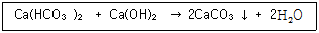
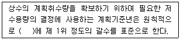
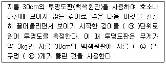
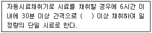
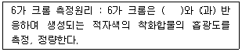
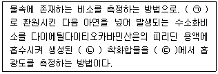

수질환경산업기사 (2016-03-06 기출문제)
1과목: 수질오염개론
1. 지하수가 오염되었을 때, 실시할 수 있는 대책 중 오염물질의 유발요인이 집중적이고 오염된 면적이 비교적 적을 경우 적용할 수 있는 가장 적절한 방법은?
- 현장공기추출법
- 유해물질 굴착 제거법
- 오염지하수의 양수 처리법
- 토양내의 미생물을 이용한 처리법
(정답률: 87%)

2. 일반적으로 담수의 DO가 해수의 DO보다 높은 이유로 가장 적절한 것은?
- 수온이 낮기 때문에
- 염도가 낮기 때문에
- 산소의 분압이 크기 때문에
- 기압에 따른 산소용해율이 크기 때문에
(정답률: 86%)
3. 물의 밀도에 대한 설명으로 가장 거리가 먼 것은?
- 물의 밀도는 3.98℃에서 최대값을 나타낸다.
- 해수의 밀도가 담수의 밀도보다 큰 값을 나타낸다.
- 물의 밀도는 3.98℃보다 온도가 상승하거나 하강하면 감소한다.
- 물의 밀도는 비중량을 부피로 나눈 값이다.
(정답률: 82%)
4. 석회를 투입하여 물의 경도를 제거하고자 한다. 반응식이 다음과 같을 때 Ca2+ 20mg/L을 제거하기 위해 필요한 석회량(mg/L)은? (단, Ca의 원자량은 40 이다.)

- 18
- 28
- 37
- 45
(정답률: 58%)
5. 성층현상이 있는 호수에서 수온의 큰 도약을 가지는 층은?
- hypolimnion
- thermocline
- sedimentation
- epilimnion
(정답률: 87%)
6. 호기성 bacteria의 질소 함량은? (단, 경험적 호기성 박테리아를 나타내는 화학식 기준)
- 약 4.2%
- 약 8.9%
- 약 12.4%
- 약 18.2%
(정답률: 77%)
7. 혐기성 조건하에서 295g의 glucose(C6H12O6)로부터 발생 가능한 CH4가스의 용적은? (단, 완전분해, 표준상태 기준)
- 약 60L
- 약 80L
- 약 110L
- 약 150L
(정답률: 65%)
8. 유량이 10,000m3/day인 폐수를 BOD 4mg/L, 유량 4,000,000m3/day인 하천에 방류하였다. 방류한 폐수가 하천수와 완전 혼합되어졌을 때 하천의 BOD가 1mg/L 높아졌다면 하천에 가해진 폐수의 BOD 부하량은? (단, 기타 조건은 고려하지 않음)
- 1,425kg/day
- 1,810kg/day
- 2,250kg/day
- 4,⑤0kg/day
(정답률: 63%)
9. 수중의 용존산소에 대한 설명으로 가장 거리가 먼 것은?
- 수온이 높을수록 용존산소량은 감소한다.
- 용존염류의 농도가 높을수록 용존산소량은 감소한다.
- 같은 수온하에서는 담수보다 해수의 용존산소량이 높다.
- 현존 용존산소 농도가 낮을수록 산소전달율은 높아진다.
(정답률: 76%)
10. 폭이 60m, 수심이 1.5m로 거의 일정한 하천에서 유령을 측정하였더니 18m3/sec이었다. 하류의 어떤 지점에서 측정한 BOD 농도가 17mg/L이었다면, 이로부터 상류 40km지점의 BODU 농도는? (단, K1 = 0.1/day(자연대수인 경우), 중간에는 지천이 없으며 기타 조건은 고려하지 않음)
- 28.9 mg/L
- 25.2 mg/L
- 23.8 mg/L
- 21.4 mg/L
(정답률: 40%)
11. 우리나라 물의 이용 형태별로 볼 때 가장 수요가 많은 용수는?
- 생활용수
- 공업용수
- 농업용수
- 유지용수
(정답률: 93%)
12. 상수원에 대한 수질검사 결과 질산성질소만 다량 검출되었을 때 옳은 것은?
- 유기질소에 의한 일시적인 오염
- 유기질소에 의한 계속적인 오염
- 유기질소에 의한 영구적인 오염
- 지질(地質)에 의한 오염
(정답률: 79%)
13. 1차 반응에서 반응개시의 물질 농도가 220mg/L이고, 반응 1시간 후의 농도는 94mg/L이었다면 반응 8시간 후의 물질의 농도는?
- 0.12mg/L
- 0.25mg/L
- 0.36mg/L
- 0.48mg/L
(정답률: 70%)
14. 해수의 특성에 관한 설명으로 옳은 것은?
- 해수 내 아질산성 질소와 질산성 질소는 전체 질소의 약 35%이며 나머지는 암모니아성 질소와 유기질소의 형태이다.
- 해수의 pH는 7.3 ~ 7.8 정도이며 탄산염의 완충용액이다.
- 해수의 주요성분 농도비는 일정하다.
- 해수는 약전해질로 평균 35% 정도의 염분농도를 함유한다.
(정답률: 72%)
15. 미생물 중 Fungi에 관한 설명이 아닌 것은?
- 탄소 동화작용을 하지 않는다.
- pH가 낮아도 잘 성장한다.
- 충분한 용존산소에서만 잘 성장한다.
- 폐수처리 중에는 sludge bulking의 원인이 된다.
(정답률: 84%)
16. 화학반응에서 의미하는 산화에 대한 설명이 아닌 것은?
- 산소와 화합하는 현상이다.
- 원자가가 증가되는 현상이다.
- 전자를 받아들이는 현상이다.
- 수소화합물에서 수소를 잃는 현상이다.
(정답률: 68%)
17. 분뇨처리과정에서 병원균과 기생충란을 사멸하기 위한 온도는?
- 25 ~ 30℃
- 35 ~ 40℃
- 45 ~ 50℃
- 55 ~ 60℃
(정답률: 89%)
18. 크기가 300m3인 반응조에 색소를 주입할 경우, 주입농도가 150mg/L이었다. 이 반응조에 연속적으로 물을 넣어 색소 농도를 2mg/L로 유지하기 위하여 필요한 소요 시간(hr)은? (단, 유입유량은 5m3/hr이며, 반응조 내의 물은 완전혼합, 1차 반응이라 가정한다.)
- 2⑤
- 215
- 260
- 295
(정답률: 44%)
19. 세균의 세포형성에 따른 분류가 아닌 것은?
- 구균
- 진균
- 간균
- 나선균
(정답률: 84%)
20. 분뇨처리장에서 1차 처리 후 BOD농도가 2,000mg/L, Cl- 농도가 200mg/L로 너무 높아 2차 처리에 어려움이 있어 희석수로 희석하고자 한다. 희석수의 Cl- 농도는 10mg/L이고, 희석 후 2차 처리 유입수의 Cl- 농도가 20mg/L일 때 희석배율은?
- 19배
- 21배
- 23배
- 25배
(정답률: 38%)
2과목: 수질오염방지기술
21. 침전지의 수면적 부하와 관련이 없는 것은?
- 유량
- 표면적
- 속도
- 유입농도
(정답률: 71%)
22. BOD 12,000ppm, 염소이온 농도 800ppm의 분뇨를 희석해서 활성오니법으로 처리하였다. 처리수가 BOD 60ppm, 염소이온 농도 50ppm으로 되었을 때 BOD제거율은? (단, 염소이온은 활성오니법으로 처리할 때 제거되지 않는다고 가정)
- 85%
- 88%
- 92%
- 95%
(정답률: 46%)
23. ( )에 알맞은 내용은?

- 5개년
- 7개년
- 10개년
- 15개년
(정답률: 77%)
24. 정수처리시설 중 완속여과지에 관한 설명으로 가장 거리가 먼 것은?
- 완속여과지의 여과속도는 15~25m/day를 표준으로 한다.
- 여과면적은 계획정수량을 여과속도로 나누어 구한다.
- 완속여과지의 모래층의 두께는 70 ~ 90cm를 표준으로 한다.
- 여과지의 모래면 위의 수심은 90 ~ 120cm를 표준으로 한다.
(정답률: 64%)
25. 유기인 함유 폐수에 관한 설명으로 틀린 것은?
- 폐수에 함유된 유기인 화합물은 파라치온, 말라치온 등의 농약이다.
- 유기인 화합물은 산성이나 중성에서 안정하다.
- 물에 쉽게 용해되어 독성을 나타내기 때문에 전처리과정을 거친 후 생물학적 처리법을 적용할 수 있다.
- 가장 일반적이고 효과적인 방법으로는 생석회 등의 알칼리로 가수분해 시키고 응집침전 또는 부상으로 전처리한 다음 활성탄 흡착으로 미량의 잔유물질을 제거시키는 것이다.
(정답률: 60%)
26. 하수관의 부식과 가장 관계가 깊은 것은?
- NH3 가스
- H2S 가스
- CO2 가스
- CH4 가스
(정답률: 75%)
27. 1차 침전지의 침전효율에 가장 큰 영향을 미치는 인자는?
- 침전지 폭
- 침전지 깊이
- 침전지 표면적
- 침전지 부피
(정답률: 73%)
28. 인구 15만명의 도시에서 유량이 400,000m3/day이고, BOD가 1.2mg/L인 하천에 50,000m3/day의 하수가 배출된다고 가정한다. 하수처리장에서 처리된 하수가 하천으로 유입되어 BOD가 2.0ppm으로 유지될 때, BOD 제거율은? (단, 1인당 1일 BOD 배출량 50g, 하수가 하천으로 유입될 때는 완전혼합으로 가정)
- 88.5%
- 92.5%
- 94.4%
- 96.5%
(정답률: 35%)
29. 활성탄 흡착의 정도와 평형관계를 나타내는 식과 관계가 가장 먼 것은?
- Freundlich 식
- Michaelis-Santen 식
- Langmuir 식
- BET 식
(정답률: 64%)
30. 활성슬러지 폭기조의 F/M비를 0.4kg, BOD/kg, MLSS•day로 유지하고자 한다. 운전조건이 다음과 같을 때 MLSS의 농도(mg/L)는? (단, 운전조건 : 폭기조 용량 100m3, 유량 1,000m3/day, 유입 BOD 100mg/L)
- 1,500
- 2,000
- 2,500
- 3,000
(정답률: 54%)
31. 하수 소독 방법인 UV 살균의 장점으로 가장 거리가 먼 것은?
- 유량과 수질의 변동에 대해 적응력이 강하다.
- 접촉시간이 짧다.
- 물의 탁도나 혼탁이 소독효과에 영향을 미치지 않는다.
- 강한 살균력으로 바이러스에 대해 효과적이다.
(정답률: 67%)
32. 물 5m3의 DO가 9.0mg/L이다. 이 산소를 제거하는 데 이론적으로 필요한 아황산나트륨(Na2SO3)의 양은? (단, 나트륨 원자량 : 23)
- 약 355g
- 약 385g
- 약 402g
- 약 429g
(정답률: 48%)
33. 20℃에서 탈산소 계수 k = 0.23-1일인 어떤 유기물 폐수의 BOD5가 200mg/L일때 2일 BOD는? (단, 상용대수를 적용한다.)
- 78mg/L
- 88mg/L
- 140mg/L
- 204mg/L
(정답률: 57%)
34. 산화지에 관한 설명으로 틀린 것은?
- 호기성 산화지의 깊이는 0.3 ~ 0.6m 정도이며 산소는 바람에 의한 표면포기와 조류에 의한 광합성에 의하여 공급된다.
- 호기성 산화지는 전수심에 걸쳐 주기적으로 혼합시켜 주어야 한다.
- 임의성 산화지는 가장 흔한 형태의 산화지며, 깊이는 1.5 ~ 2.5m 정도이다.
- 임의성 산화지는 체류시간은 7 ~ 20일 정도이며 BOD처리효율이 우수하다.
(정답률: 56%)
35. 최근 활성 슬러지법으로 2차 폐수처리장을 건설할 때 1차 침전지(primary settling tank)를 생략하는 경우가 많아지고 있다. 1차 침전지가 없으므로 갖는 장점이 아닌 것은?
- 부지 면적과 건설비가 절감된다.
- 충격 부하 시 처리가 용이하다.
- 슬러지 양이 감소가 된다.
- 생물학적 처리 이전의 고농도 유기물의 부패방지가 된다.
(정답률: 66%)
36. 하‧폐수 처리의 근본적인 목적으로 가장 알맞은 것은?
- 질 좋은 상수원의 확보
- 공중보건 및 환경보호
- 미관 및 냄새 등 심미적 요소의 충족
- 수중생물의 보호
(정답률: 77%)
37. 하수고도 처리공법인 A/O공법의 공정 중 혐기조의 역할을 가장 적절하게 설명한 것은?
- 유기물 제거, 질산화
- 탈질, 유기물 제거
- 유기물 제거, 용해성 인 방출
- 유기물 제거, 인 과잉흡수
(정답률: 68%)
38. 오존살균에 관한 설명으로 틀린 것은?
- 오존은 상수의 최종살균을 위해 주로 사용된다.
- 오존은 저장할 수 없어 현장에서 생산해야 한다.
- 오존은 산소의 동소체로 HOCl보다 더 강력한 산화제이다.
- 수용액에서 오존은 매우 불안정하여 20℃의 증류수에서의 반감기는 20~30분 정도이다.
(정답률: 56%)
39. 3,200m3/day의 하수를 폭 4m, 깊이 3.2m, 길이 20m인 직사각형 침전지로 처리한다면 이 침전지의 표면부하율은?
- 30m/day
- 40m/day
- 50m/day
- 60m/day
(정답률: 51%)
40. 분뇨처리에 있어서 SVI를 측정한 결과 120이었고 SV는 30%이었다. 포기조의 MLSS 농도는?
- 2,000mg/L
- 2,500mg/L
- 3,000mg/L
- 3,500mg/L
(정답률: 59%)
3과목: 수질오염공정시험방법
41. 용액 중 CN- 농도를 2.6mg/L로 만들려고 하면 물 1,000L에 용해될 NaCN의 양(g)은? (단, Na 원자량 : 23)
- 약 5
- 약 10
- 약 15
- 약 20
(정답률: 42%)
42. 이온크로마토그래피의 일반적인 시료주입량과 주입방식은?
- 1 ~ 5μL, 루프-밸브에 의한 주입방식
- 5 ~ 10μL, 분무기에 의한 주입방식
- 10 ~ 100μL, 루프-밸브에 의한 주입방식
- 100 ~ 250μL, 분무기에 의한 주입방식
(정답률: 59%)
43. 용존산소-적정법으로 DO를 측정할 때 지시약 투입 후 적정 종말점 색은?
- 청색
- 무색
- 황색
- 홍색
(정답률: 70%)
44. 투명도 측정원리에 관한 설명으로 ( )안에 알맞은 것은?

- ㉠ 0.1m, ㉡ 5cm, ㉢ 8
- ㉠ 0.1m, ㉡ 10cm, ㉢ 6
- ㉠ 0.5m, ㉡ 5cm, ㉢ 8
- ㉠ 0.5m, ㉡ 10cm, ㉢ 6
(정답률: 57%)
45. 폐수처리 공정 중 관내의 압력이 필요하지 않은 측정용 수로의 유량 측정 장치인 웨어가 적용되지 않는 것은?
- 공장폐수원수
- 1차 처리수
- 2차 처리수
- 공정수
(정답률: 55%)
46. 원자흡수분광광도계에 사용되는 가장 일반적인 불꽃 조성 가스는?
- 산소 – 공기
- 아세틸렌 – 공기
- 프로판 – 산화질소
- 아세틸렌 – 질소
(정답률: 60%)
47. 자외선/가시선 분광법(다이에틸다이티오 카르바민산법)을 사용하여 구리(Cu)를 정량할 때 생성되는 킬레이트 화합물의 색깔은?
- 적색
- 황갈색
- 청색
- 적자색
(정답률: 61%)
48. 물벼룩을 이용한 급성 독성 시험법(시험생물)에 관한 내용으로 틀린 것은?
- 시험하기 12시간 전부터는 먹이 공급을 중단하여 먹이에 대한 영향을 최소화 한다.
- 태어난 지 24시간 이내의 시험생물일지라도 가능한 한 크기가 동일한 시험생물을 시험해 사용한다.
- 배양 시 물벼룩이 표면에 뜨지 않아야 하고, 표면에 뜰 경우 시험에 사용하지 않는다.
- 물벼룩을 옮길 때 사용되는 스포이드에 의한 교차 오염이 발생하지 않도록 주의를 기울인다.
(정답률: 64%)
49. 시험에 적용되는 용어의 정의로 틀린 것은?
- 기밀용기 : 취급 또는 저장하는 동안에 밖으로부터의 공기 또는 다른 가스가 침입하지 아니하도록 내용물을 보호하는 용기
- 정밀히 단다 : 규정된 양의 시료를 취하여 화학저울 또는 미량저울로 칭량함을 말한다.
- 정확히 취하여 : 규정된 양의 액체를 부피피펫으로 눈금까지 취하는 것을 말한다.
- 감압 : 따로 규정이 없는 한 15mmH2O 이하를 뜻한다.
(정답률: 73%)
50. 처리하여 방류된 공장폐수의 BOD값을 전혀 모르고 BOD 측정을 하려할 때 희석수에 함유되는 공장폐수시료의 비율은?
- 0.1 ~ 1.0%
- 1 ~ 5%
- 5 ~ 25%
- 25 ~ 50%
(정답률: 48%)
51. 폐수 중의 부유물질을 측정하기 위한 실험에서 다음과 같은 결과를 얻었다. 이 결과로부터 알 수 있는 거름종이와 여과물질(건조상태)의 무게는? (단, 거름종이 무게 : 1.991g, 시료의 SS : 120mg/L, 시료량 : 200mL)
- 2.0⑤g
- 2.015g
- 2.150g
- 2.550g
(정답률: 46%)
52. 자외선/가시선 분광법으로 정량하는 물질이 아닌 것은?
- 총인
- 노말헥산 추출물질
- 불소
- 페놀
(정답률: 47%)
53. 총대장균군의 분석법이 아닌 것은?
- 막여과법
- 현미경계수법
- 시험관법
- 평판집락법
(정답률: 58%)
54. 수은 측정을 위해 자외선/가시선 분광법(디티존법)을 적용할 때 사용되는 완충액은?
- 인산-탄산염 완충용액
- 붕산-탄산염 완충용액
- 인산-수산염 완충용액
- 붕산-수산염 완충용액
(정답률: 48%)
55. 배출허용기준 적합여부 판정을 위한 복수시료 채취방법에 대한 기준으로 ( )에 알맞은 것은?

- 1회
- 2회
- 4회
- 8회
(정답률: 65%)
56. 시료의 보존방법 및 최대보존기간에 대한 내용으로 옳은 것은?
- 냄새용 시료는 4℃ 보관, 최대 48시간 동안 보존한다.
- COD용 시료는 황산 또는 질산을 첨가하여 pH4이하, 최대 7일간 보존한다.
- 유기인용 시료는 HCl로 pH 5 ~ 9, 4℃ 보관, 최대 7일간 보존한다.
- 질산성 질소용 시료는 4℃ 보관, 최대 24시간 보존한다.
(정답률: 49%)
57. 다음 ( )에 알맞은 것은? (단, 자외선/가시선 분광법 기준)

- 다이아조화페닐
- 다이에틸디티오카르바민산나트륨
- 아스코르빈산은
- 다이페닐카바자이드
(정답률: 56%)
58. 자외선/가시선 분광법으로 비소를 측정할 때의 방법이다. ( )에 옳은 내용은?

- ㉠ 3가 비소, ㉡ 청색, ㉢ 620nm
- ㉠ 3가 비소, ㉡ 적자색, ㉢ 530nm
- ㉠ 6가 비소, ㉡ 청색, ㉢ 620nm
- ㉠ 6가 비소, ㉡ 적자색, ㉢ 530nm
(정답률: 54%)
59. 다음 이온 중 이온크로마토그래피로 분석 시 정량한계 값이 다른 하나는?
- F-
- NO2-
- Cl-
- SO42-
(정답률: 47%)
60. pH 측정에 사용되는 전극이 오염되었을 때 전극의 세척에 사용하는 용액은?
- 황산 0.1M
- 황산 0.01M
- 염산 0.1M
- 염산 0.01M
(정답률: 45%)
4과목: 수질환경관계법규
61. 기타수질오염원 대상에 해당되지 않는 것은?
- 골프장
- 수산물 양식시설
- 농축수산물 수송시설
- 운수장비 정비 또는 폐차장 시설
(정답률: 52%)
62. 조업정지처분에 갈음한 과징금 처분대상 배출시설이 아닌 것은?
- 방위사업법 규정에 따른 방위산업체의 배출시설
- 수도법 규정에 의한 수도시설
- 도시가스사업법 규정에 의한 가스공급시설
- 석유 및 석유대체연료 사업법 규정에 따른 석유비축계획에 따라 설치된 석유비축시설
(정답률: 45%)
63. 배출부과금을 부과할 때 고려하여야 하는 사항에 해당되지 않는 것은?
- 배출시설 규모
- 배출허용기준 초과 여부
- 수질오염물질의 배출기간
- 배출되는 수질오염물질의 종류
(정답률: 48%)
64. 수질오염감시경보에 관한 내용으로 측정항목별 측정값이 관심단계 이하로 낮아진 경우의 수질오염감시경보단계는?
- 경계
- 주의
- 해제
- 관찰
(정답률: 63%)
65. 정당한 사유없이 하천•호소에서 자동차를 세차한 자에 대한 과태료 처분기준으로 옳은 것은?
- 100만원 이하
- 300만원 이하
- 500만원 이하
- 1,000만원 이하
(정답률: 48%)
66. 환경정책기본법 시행령에서 명시된 환경기준 중 수질 및 수생태계(해역)의 생활 환경기준 항목이 아닌 것은?
- 총질소
- 총대장균군
- 수소이온농도
- 용매 추출유분
(정답률: 38%)
67. 수질 및 수생태계 정책심의위원회에 관한 설명으로 틀린 것은?
- 위원회의 위원장은 환경부 차관으로 한다.
- 수질 및 수생태계와 관련된 측정•조사에 관한 사항을 심의한다.
- 환경부 장관이 위촉하는 수질 및 수생태계 관련 전문가 3명을 포함한다.
- 위원회는 위원장과 부위원장 각 1명을 포함한 20명 이내의 위원으로 성별을 고려하여 구성한다.
(정답률: 43%)
68. 사업장 규모에 따른 종별 구분이 잘못된 것은?
- 1일 폐수 배출량 5,000m3 – 제1종 사업장
- 1일 폐수 배출량 1,500m3 – 제2종 사업장
- 1일 폐수 배출량 800m3 – 제3종 사업장
- 1일 폐수 배출량 150m3 – 제4종 사업장
(정답률: 59%)
69. 환경부장관이 폐수처리업자의 등록을 취소할 수 있는 경우와 가장 거리가 먼 것은?
- 파산선고를 받고 복권되지 아니한 자
- 거짓이나 그 밖의 부정한 방법으로 등록한 경우
- 등록 후 1년 이내에 영업을 시작하지 아니하거나 계속하여 1년 이상 영업실적이 없는 경우
- 대기환경보전법을 위반하여 징역의 실형을 선고받고 그 형의 집행이 끝나거나 집행을 받지 아니하기로 확정된 후 2년이 지나지 아니한 사람
(정답률: 61%)
70. 수질 및 수생태계 보전에 관한 법률상 호소에서 수거된 쓰레기의 운반•처리 의무자는?
- 수면관리자
- 환경부 장관
- 지방환경관서의 장
- 특별자치시장•특별자치도지사•시장•군수•구청장
(정답률: 47%)
71. 위임업무 보고사항 중 골프장 맹•고독성 농약 사용 여부 확인 결과에 대한 보고 횟수 기준으로 옳은 것은?
- 수시
- 연 4회
- 연 2회
- 연 1회
(정답률: 55%)
72. 수질오염방지시설 중 생물화학적 처리시설이 아닌 것은?
- 접촉조
- 살균시설
- 살수여과상
- 산화시설(산화조 또는 산화지를 말한다)
(정답률: 50%)
73. 환경기술인을 임명하지 아니하거나 임명(바꾸어 임명한 것을 포함한다)에 대한 신고를 하지 아니한 자에 대한 과태료 처분기준은?
- 100만원 이하
- 300만원 이하
- 500만원 이하
- 1,000만원 이하
(정답률: 39%)
74. 오염총량관리기본계획 수립 시 포함되어야 하는 사항이 아닌 것은?
- 해당 지역 개발 현황
- 지방자치단체별•수계구간별 오염부하량의 할당
- 관할 지역에서 배출되는 오염부하량의 총량 및 저감계획
- 해당 지역 개발계획으로 인하여 추가로 배출되는 오염부하량 및 그 저감계획
(정답률: 39%)
75. 환경부장관은 대권역별로 수질 및 수생태계 보전을 위한 기본계획을 몇 년마다 수립하여야 하는가?
- 1년
- 3년
- 5년
- 10년
(정답률: 58%)
76. 환경부령이 정하는 수로에 해당되지 않는 것은?
- 운하
- 상수관거
- 지하수로
- 농업용 수로
(정답률: 60%)
77. 다음 중 특정수질유해물질인 것은?
- 바륨화합물
- 브롬화합물
- 니켈과 그 화합물
- 셀레늄과 그 화합물
(정답률: 50%)
78. 환경부장관이 비점오염원관리지역을 지정, 고시한 때에 관계 중앙행정기관의 장 및 시•도지사와 협의하여 수립하여야 하는 비점오염원관리대책에 포함되어야 할 사항이 아닌 것은?
- 관리대상 수질오염물질의 종류 및 발생량
- 관리대상 수질오염물질의 관리지역 영향 평가
- 관리대상 수질오염물질의 발생 예방 및 저감 방안
- 관리목표
(정답률: 49%)
79. 해당 부과기간의 시작일 전 1년 6개월 동안 방류수 수질기준을 초과하지 아니한 사업자의 기본배출부과금 감면율로 옳은 것은?
- 100분의 20
- 100분의 30
- 100분의 40
- 100분의 50
(정답률: 47%)
80. 오염총량초과부과금의 납부통지는 부과 사유가 발생한 날부터 몇일 이내에 하여야 하는가?
- 15일
- 30일
- 60일
- 90일
(정답률: 41%)